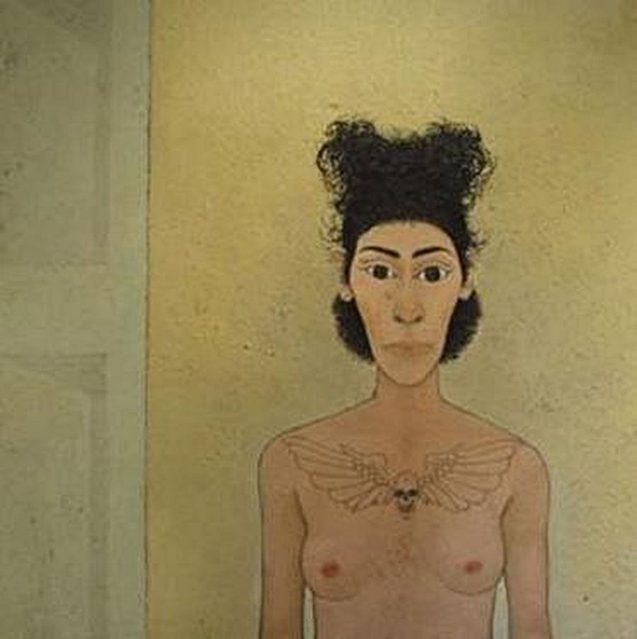

Andrea Lucchesi

Ogni storia ha la sua importanza: mi interessano quelle persone di cui pochi si accorgono, che vivono nei sobborghi, ai margini degli agglomerati urbani, nelle periferie estreme. Sono come guerrieri che si sono smarriti nella strada del ritorno dopo aver perso la loro battaglia: rifugiatisi in una sorta di terra di mezzo, hanno scelto di resistere anziché soccombere.
Lo stesso Andrea Lucchesi con queste parole ci permette di conoscere la natura più profonda della sua pittura e di farcene irretire. Le opere del giovane artista fiorentino raccolgono nelle opache pennellate da cui sono composte stimoli diversissimi: dal classicismo più intenso e quasi arcaico, alla modernità dei protagonisti della sua pittura, che ci guardano con malinconica fierezza. Lucchesi dipinge quello che c’è e della cui esistenza a volte preferiremmo non sapere: un mondo anticonvenzionale, scomodo. L’artista, infatti, registra l’umanità silenziosa che lo circonda, un’umanità eterogenea conosciuta attraverso la lunga frequentazione di un centro sociale vicino a Firenze. E’ qui che entra in contatto con tutti quegli antieroi che costituiscono il sottofondo delle nostre grandi e distratte città. Lucchesi li ritrae rigorosamente dal vero, in studio (uno spazio che fu di Tito Conti e che, vincendo il prestigioso premio Tito e Maria Conti, conferito dall’Accademia delle Arti del Disegno di Firenze, ha in uso per cinque anni). Con l’incisività della sua pittura, Lucchesi riesce a materializzare su tela la loro condizione incerta, interpretando il contesto urbano come palcoscenico sul quale si svolge questa loro infinita lotta per la sopravvivenza; lotta che, in fondo, anche ognuno di noi, forse in forme e modalità diverse, deve combattere ogni giorno. E probabilmente è proprio per questo motivo che la pittura del giovane e promettente artista toscano ci tocca così profondamente: Lucchesi riesce a cogliere il male di vivere, per dirla come Montale, e ne fa manifesto della propria artisticità. La malinconia che il pittore infonde nelle sue tele però, non è disgiunta da una originalissima forma di sentimentalismo, evidente ad esempio ne Les jeunes amoreux, dove i due innamorati sembrano giovani divinità greche, morbidamente adagiati l’una nelle braccia dell’altro, fieri del loro amore; come un moderno Zeus, ornato di peplo e piercing ed una ninfa dall’acconciatura rasta. Altre volte i dipinti sono permeati da un senso di dolcezza familiare, come in Zoran, un cane che sembra riposarsi, stremato dopo una lunga ricerca, forse quella di una casa? Tenero parallelismo con gli altri soggetti, questa volta umani, anch’essi alla ricerca di un porto sicuro in cui trovare requie. In un delizioso paradosso la modernità dei suoi soggetti si lega ad una iconografia tipicamente classica: la pittura, la cui natura bidimensionale è sottolineata dalla scomparsa della prospettiva, diventa così ammantata di un alone ieratico e quasi sacrale, come in Gatto Piramide, quasi un frammento di pittura egizia riportato ai giorni nostri. La superficie del dipinto, infatti, nega ogni profondità della scena, la campitura dello sfondo è piatta. La deformazione delle prospettive e il segno tagliente dell’espressionismo, la verità della nuova oggettività, la poetica di Bacon incentrata sulla solitudine e l’alienazione dell’individuo moderno, si fondono nella sua opera rilevando un universo pittorico profondamente intriso di storia contemporanea e del suo sociale. Come bene descrive Emma Gravagnuolo: Con una puntuale capacità descrittiva lascia che sia la forza di quanto rappresentato a fornire una chiave di lettura della realtà. I volti dei protagonisti sono presenze reali, immobili, ritratte in una fissità silenziosa. In alcuni quadri Lucchesi evidenzia il loro aspetto caricaturale, ne mette in luce comportamenti ambigui che esemplificano stereotipi e clichè. In altri, invece, i suoi personaggi testimoniano atteggiamenti confidenziali, espressioni spontanee, specchio della loro reiterata frequentazione nello studio dell’artista: la posa per i quadri e spesso lunga, paziente, a volte fatta di tentativi, si avvicina a quanto sosteneva Balthus “l’osservazione è un mezzo di conoscenza del mondo; occorre guardare, guardare e ancora guardare.” La loro forza è a portata di sguardo, sottolinea la domesticità e non l’eccezionalità. Lo sguardo dell’artista stesso, acuto, sensibile, sviluppa in questo modo una politica dell’immagine estranea a facili sociologie, che abbraccia tutto quello che ci circonda.